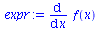
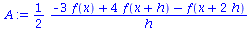
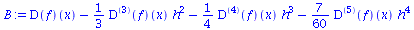

| > | read("FD.mpl"): MFD(); |
| Warning, grid_functions is not assigned |
| FD table updated, see the content using SFDT() command |
| > | expr:= diff(f(x),x); |
|  |
| > | A:=Sten(expr,[0,1,2]); |
|  |
| > | B:=convert(series(A,h),polynom); |
|  |
| > | residual := simplify(eval( B- expr, { h = 0})) ; |
| > |